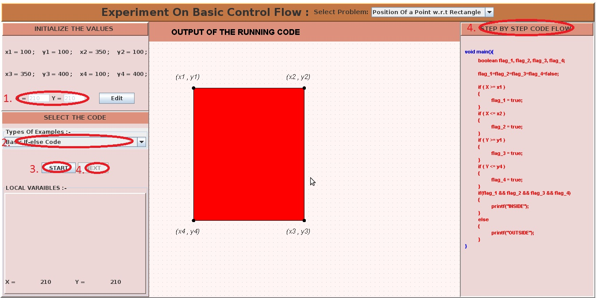
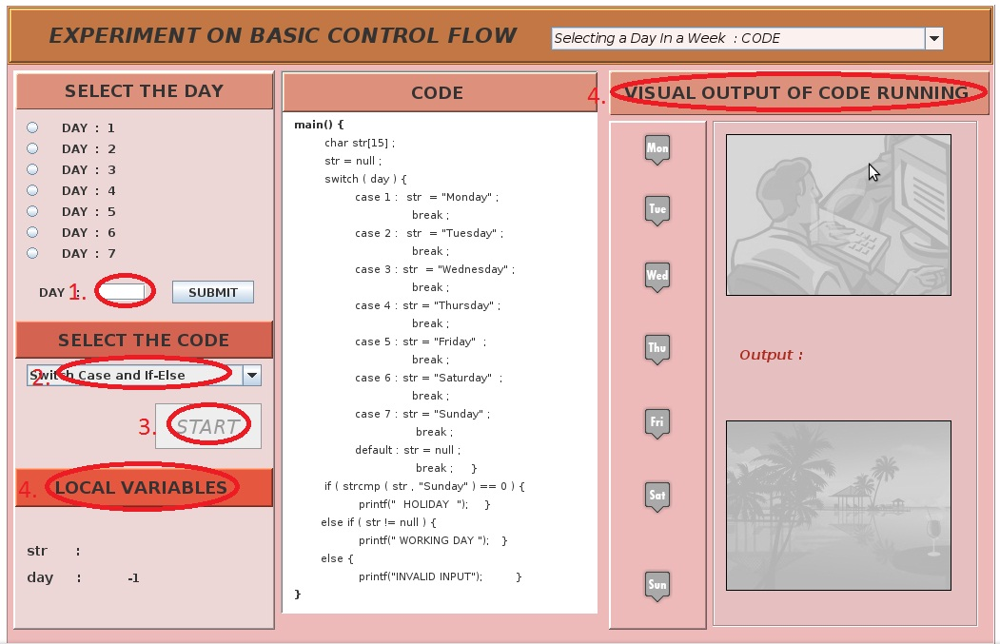

A computer program can be thought of as a sequence of instructions which are followed by a computer to solve a problem. However, the sequence in which they are written and the sequence in which they are executed may not be the same. If the execution of every program was sequential, it would run exactly the same way each time. Hence, to write programs of greater complexity, which can take decisions based on user input or values of variables, we need a decision making mechanism which can alter the sequential order of execution of statements. The order of execution of statements in a program is called Control Flow (or flow of control).
An example where we need to alter the sequential flow of control is when we want a set of instructions to be executed in one situation, and an entirely different set of instructions in another situation. A real life example of this sort of "decision-making" could be: If the traffic light is green, keep moving; if yellow, then wait; if red, then stop. In the case of programmming, decision-making essentially means deciding from which statement the execution should be resumed. This decision about where the execution should be resumed is made based on the value of a variable or an expression.
The if construct, for example, excecutes a set of instructions only if a condition is true. A switching construct, on the other hand, allows decision-making based on the state of a variable or an expression. Its purpose is to allow the value of a variable or an expression to control the flow of program execution via a multiway branch. Constructs like these can be placed inside another to create more complex flow of control. This enclosing of structures into one another is called nesting. These constructs are known as conditionals because they alter the flow of control based on a condition.
Apart from this, there is another class of constructs called loops, which can be used to repeat a set of instructions. This repetition can be done a fixed number of times or until some specific condition is met. Just like the conditionals, the loops can also be nested. Loops and conditionals can also be nested inside each other.
In this lab, we shall see the working of conditional constructs.

In order to understand the working of conditionals, it is important to understand the term block. A group of code statements that are associated and intended to be executed as a unit is referred to as a block. In C, the beginning of a block of code is denoted by writing a set of statements with in curly braces. It is not necessary to place a semicolon after the end of a block. Blocks can be left empty. A block and can be written inside another block of statements, in such a case the former block is said to be nesting inside the other block. Example of a block:
{
int x=10;
int y=x+10;
int z;
z=x+y;
}
A conditional is a statement that instructs the computer to execute a certain block of code or alter certain data only if a specific condition has been met. Conditionals are used to implement decision-making based on the truthfulness of a condition or the state of a variable or an expression. The most common conditional construct is the If-Else constrct and Switch-Case construct.
If construct
It is the most simple construct which is used to specify that a block should only be executed only if certian condition is true. The syntax of an if statement is as follows:
if(test expression)
{
block1;
}
Here, if the test expression is true, then statements in block1 are executed. If the test expression is false then statements in block1 are completly ignored.
If-Else construct
This construct is used to execute one out of two blocks of statements based on the truthvalue of a conditon. The syntax of an If-else statement is as follows:
if(test expression)
{
block1;
}
else
{
block2;
}
Here, if the test expression is true, then statements in block1 are executed. If the test expression is false then statements in block2 are executed.
Nesting example
If and If-else statements can be nested to create more complex control flows:
if(test expression1){
statements1;
if(test expression2){
statements2;
}
}
else{
statements3;
if(test expression3){
statements4;
}
else{
statements5;
}
}
Here if the test expression1 is true then statements1 are executed followed by the evaluation of test expression2. If test expression2 is true, statements2 are executed; if it is false, then statements2 are completly ignored.
If test expression1 is false, then statements3 are executed followed by evalution of test expression3. If test expression3 is true statements4 are executed. If test expression3 is false then statements5 are executed.
If-Else ladder
When a series mutually exclusive conditions(for example, deciding grade based on marks) have to be checked, then we may use the If-else ladder construct. This construct is essentially created by repeatedly nesting an if-else construct inside the else part of an If-else construct. The conditions are evaluated from top to bottom and whenever a condition is true, then the statements corresponding to the true part of the condition are executed and we exit out of the construct. The final else part is executed only if all the conditions get evaluated to false. It takes the following general form:
if (test expression1) statements1; else if (test expression2) statements2; else if (test expression3) statements3; else if (test expression4) statements4; else statements5;
Here, the test expression1 is evaluated first and if it is true then the statements1 are executed and we exit out of the construct. If test expression1 is false, then test expression2 is evaluated. If test expression2 is true then statements2 are executed and we exit out of the construct. If test expression2 is false, then test expression3 is evaluated. If test expression3 is true then statements3 are executed and we exit out of the construct. If test expression3 is false, then test expression4 is evaluated. If test expression4 is true then statements4 are executed and we exit out of the construct. If test expression4 is false, then statements4 are executed.
Switch-Case constructs
A Switch-Case is a construct which is used to allow jumping to one of the multiple blocks. This decision is taken based on the value of a variable or an expression. Its purpose is to allow the value of a variable or an expression to control the flow of program execution via a multiway branch. A default case may also be specified to be executed when the given state has not been addressed by any of the other cases.
switch ( test expression ) {
case 1 :
statement1;
break;
case 2 :
statement2;
break;
case n : //an example general case
statementn;
break;
default :
statements_default;
}
Here, if test expression evaluates to 1, then statements1 are evaluated. And then due to break, we exit the construct.
If test expression evaluates to 2, then statements1 are evaluated. And then due to break, we exit the construct.
Similarly, if test expression evaluates to some value n for which a case has been written under case n:, then statementsn are evaluated. And then due to break, we exit the construct.
If test expression evalutes to a value for which a case has not been listed, then statements_default are executed.
Important:
1. Take special note of the difference between the relational operator "equal to" which is denoted by "==", and the assignement operator which is denoted by "=". Misuse of "=" in the place of "==" won't be reported by the compiler.
For example:
Writing,
if(x=3){
statements1;
}
instead of
if(x==3){
statements1;
}
will result into the test expression for the if construct to always be true and hence, statements1 are always executed.
2. Typically, the last statement for each case is a break statement. This causes program execution to jump to the statement following the closing bracket of the switch statement, which is what one would normally want to happen. However if the break statement is omitted, program execution continues with the first line of the next case, if any. This is called a fall-through.

1. To learn how decision making is done while programming.
2. To learn about the various simple constructs used for control flow.


Here you will do two experiments. First will be on finding whether a point is inside or outside rectangle. Secondly you will see a program for selecting a day in the week using switch construct.


-
Experiment Part I: Position of Point w.r.t to a Rectangle
Here we shall see how the problem of determining whether a given point is inside or outside a rectangle can be solved using various conditional constructs.
1. Initialize the values of the variables on the top left. X and Y denote the x and y coordinate of the input point.
2. Select the code prototype with which you would like to solve the problem.
3. Click start to begin the expriment.
4. Click Next to get a step by step execution of the code along with the reasoning which is displayed on the right hand side panel.

Experiment Part II: Selecting the Day of a week
Here we shall see how a switching construct works by associating one number to each of the days.
1. First, select a day from the top left by clicking on the correspoding radio button or enter any number in the textbox directly. Then, click on SUBMIT.
2. Select the code prototype with which you would like to solve the problem.
3. Click on the activated START button to begin the experiment.
4. Click Next to get a step by step execution of the code. The changes in local variables can be visualized on the bottom left of the screen. The OUTPUT can be visualized on the right part of the screen.


- http://en.wikibooks.org/wiki/C_Programming/Control
- http://en.wikipedia.org/wiki/Control_flow
- http://www.exforsys.com/tutorials/c-language/decision-making-and-branching-in-c.html
- Section 3.1-3.4, The C Programming Language, Kernighan and Ritchie
- Section 6.1-6.2, Practical C Programming, Steve Qualline